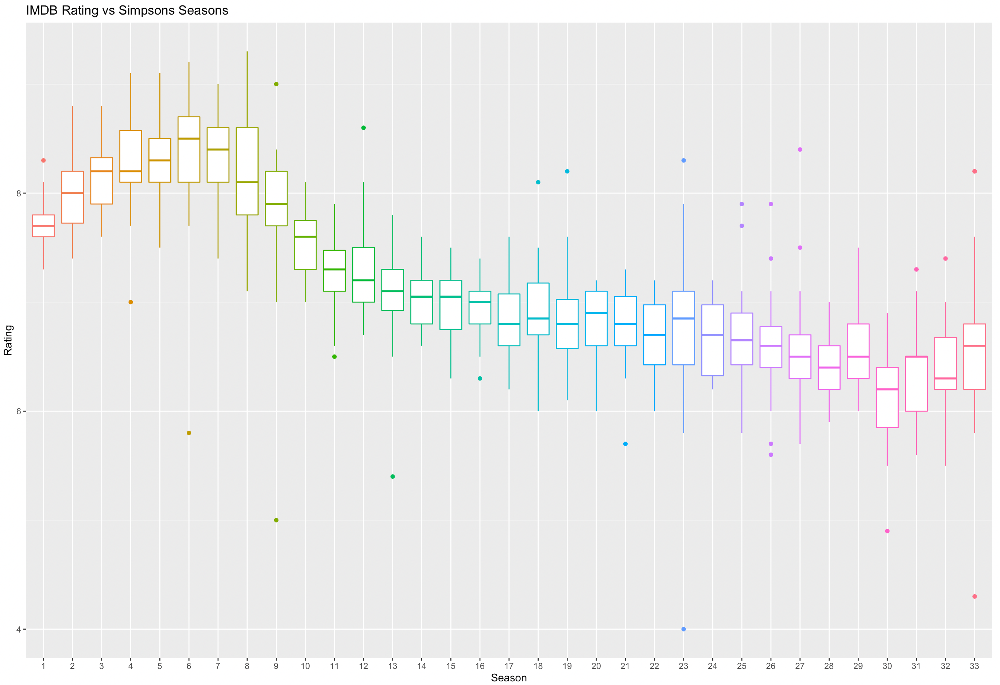

About
Richard Luu
An alum from Virginia Tech's Computational Modeling & Data Analytics (CMDA) program with interests in data modeling, regression and visualization.
Education
Virginia Polytechnic Institute & State University
Blacksburg, VA
B.S. CMDA | Minor: Mathematics | GPA: 3.14
The CMDA program draws on expertise from three primary departments at Virginia Tech with strengths in quantitative science: Mathematics, Statistics, and Computer Science. By combining elements of these disciplines in innovative, integrated courses that emphasize techniques at the forefront of applied computation, we teach a rich suite of quantitative skills for tackling today's massive data-based problems.
Aug. 2016 - Dec. 2020
Experience
Senior Capstone Team Leader
Virginia Tech, Blacksburg, VA
- Worked with team from client’s (Anthem Inc.) business intelligence team on health analysis problem.
- Organized meeting schedules and task delegation for team of peers.
- Communicated with client in form of weekly meetings discussing progress and technical report updates with visualizations of data (graphs and tables).
- Lead data analysis and interpretation section of research on health levels across Virginia with regression analysis.
- Developed and created Tableau dashboard with accompanying webpage displaying collected information.
- Compiled and aggregated data family from variety of sources then cleaned accordingly in R (dyplr, tidyverse, etc.).
Aug. 2020 - Dec. 2020
Relevant Course Work
Virginia Tech, Blacksburg, VA
- Researched Ising model simulation and used high performance computing in C / Linux to visualize results all monitored through Github version control with scalability study.
- Wrote logic and database knowledge for Java projects: Towers of Hanoi and Music Database
Aug. 2016 - Dec. 2020
Skills

Projects

Simpsons Episode Analysis
An analysis conducted on Simpsons episodes data obtained from Kaggle done in R. Highlighting exploratory data analysis, data cleaning, time series study, also a Tableau dashboard.
Iris Classification Dashboard
Sample dashboard done in R-Shinny of classic classification data of Iris species.